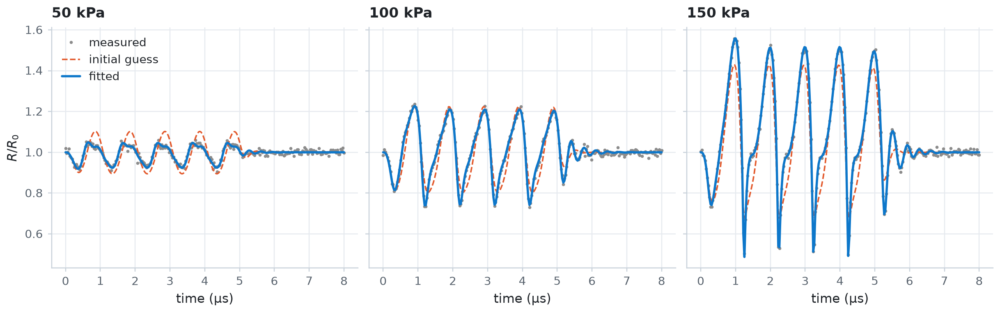

Fit shell parameters to radius curves¶
Estimate the elasticity and the dilatational viscosity of a lipid shell from noisy radius-time curves recorded at three driving pressures. In this example, you declare the unknowns with Parameter bounds, fit all three recordings at once with fit_parameters, and look at the loss landscape that the optimiser walks across.
import os
import time
import jax
import jax.numpy as jnp
import matplotlib.pyplot as plt
import numpy as np
import optax
from jbubble import SaveSpec, fit_parameters, run_simulation
from jbubble.fitting import Parameter
from jbubble.metrics import normalised_mse_radius
from jbubble.utils import GridSweep
from jbubble.utils.presets import lipid_bubble
plt.style.use("jbubble.style.light")
# Set JBUBBLE_QUICK=1 for a fast, coarse run (used by CI).
QUICK = os.environ.get("JBUBBLE_QUICK") == "1"
Make stand-in measurements¶
In a real study, an ultra-high-speed camera records the radius of one bubble at several driving pressures. Here, the lipid_bubble preset plays the bubble: a 2 µm SF6 bubble with a smoothed Marmottant lipid shell, driven by a five-cycle 1 MHz tone burst. Its shell elasticity chi and dilatational viscosity kappa_s are the values to recover. Gaussian noise of 20 nm, 1 % of the radius, stands in for the camera's measurement error.
R0 = 2e-6 # equilibrium radius, measured optically [m]
PRESSURES = [50e3, 100e3, 150e3] # peak driving pressures [Pa]
NOISE = 20e-9 # radius measurement noise, one standard deviation [m]
TRUE = {"chi": 0.5, "kappa_s": 7.5e-9} # [N/m], [N s/m]
SAVE_SPEC = SaveSpec(256)
T_MAX = 8e-6 # [s]
key = jax.random.PRNGKey(0)
conditions = []
for i, pressure in enumerate(PRESSURES):
eom, pulse = lipid_bubble(R0=R0, pressure=pressure, **TRUE)
clean = run_simulation(eom, pulse, save_spec=SAVE_SPEC, t_max=T_MAX).radius
noise = NOISE * jax.random.normal(jax.random.fold_in(key, i), clean.shape)
conditions.append({"pressure": pressure, "radius": clean + noise})
print(f"{pressure / 1e3:5.0f} kPa: R_max/R0 = {float(clean.max()) / R0:.2f}")
50 kPa: R_max/R0 = 1.05
100 kPa: R_max/R0 = 1.23
150 kPa: R_max/R0 = 1.56
Describe the model and the loss¶
fit_parameters needs two functions. Both receive one entry of conditions, that is, one recording, as their second argument:
make_model(params, condition)returns the(eom, pulse)pair to simulate.lipid_bubblereturns exactly such a pair, so the preset is the whole model.loss_fn(result, condition)compares the simulation with the recording.normalised_mse_radiusdivides the mean squared error by \(R_0^2\), so the loss is dimensionless. With a perfect model, it settles at the noise level, \((\sigma_\text{noise}/R_0)^2 = 10^{-4}\).
fit_parameters averages the loss over the recordings. Recordings at several pressures constrain the shared shell parameters far better than one recording does.
def make_model(params, condition):
return lipid_bubble(
R0=R0,
pressure=condition["pressure"],
chi=params["chi"],
kappa_s=params["kappa_s"],
)
def loss_fn(result, condition):
return normalised_mse_radius(result.radius, condition["radius"], R0)
Declare the parameters and fit¶
chi is about 0.5 N/m and kappa_s about \(10^{-8}\) N s/m, so no single learning rate suits both raw values. Wrap each in a Parameter instead. The optimiser then updates a coordinate of order one, so a learning rate of 0.1 changes each value by about 10 % per step at first, and a cosine-decay schedule shrinks the steps so that the fit settles. The bounds keep both values physical: kappa_s stays positive, and chi stays between 0 and 2 N/m.
The fit starts from a poor guess, with chi three times too small and kappa_s almost three times too large. step_callback records the parameters after every step, in physical units.
params0 = {
"chi": Parameter(0.15, lower=0.0, upper=2.0), # [N/m]
"kappa_s": Parameter(2e-8, lower=0.0), # [N s/m]
}
n_steps = 30 if QUICK else 150
path = []
def record(step, params, loss):
path.append((float(params["chi"]), float(params["kappa_s"])))
start = time.perf_counter()
fit = fit_parameters(
make_model,
params0,
conditions=conditions,
loss_fn=loss_fn,
optimizer=optax.adam(optax.cosine_decay_schedule(0.1, n_steps)),
n_steps=n_steps,
save_spec=SAVE_SPEC,
t_max=T_MAX,
step_callback=record,
)
path = np.array(path)
print(f"Fit took {time.perf_counter() - start:.1f} s: {fit.message}")
for name, unit in (("chi", "N/m"), ("kappa_s", "N s/m")):
value = float(fit.params[name])
error = 100 * (value / TRUE[name] - 1)
print(f"{name:>8} = {value:.4g} {unit} (true {TRUE[name]:.4g}, {error:+.1f} %)")
print(
f"Final loss {float(fit.loss_history[-1]):.3e}, noise level {(NOISE / R0) ** 2:.1e}"
)
step 0 / 150 loss = 3.4741e-03 chi=0.15, kappa_s=2e-08
step 25 / 150 loss = 1.2187e-04 chi=0.4635, kappa_s=7.923e-09
step 50 / 150 loss = 1.0689e-04 chi=0.5288, kappa_s=7.417e-09
step 75 / 150 loss = 1.0118e-04 chi=0.5005, kappa_s=7.496e-09
step 100 / 150 loss = 1.0117e-04 chi=0.5033, kappa_s=7.519e-09
step 125 / 150 loss = 1.0115e-04 chi=0.5024, kappa_s=7.504e-09
step 150 / 150 loss = 1.0114e-04 chi=0.5025, kappa_s=7.502e-09
Fit took 26.7 s: completed 150 steps
chi = 0.5025 N/m (true 0.5, +0.5 %)
kappa_s = 7.502e-09 N s/m (true 7.5e-09, +0.0 %)
Final loss 1.011e-04, noise level 1.0e-04
Both values come back to within 1 %, and the final loss sits at the noise level: the model explains everything in the data except the noise.
Look at the loss landscape¶
The following cell evaluates the same loss, averaged over the three recordings, on a grid of chi and kappa_s values with GridSweep, and draws the optimiser's path on it.
radii = jnp.stack([c["radius"] for c in conditions])
pressures = jnp.array(PRESSURES)
def mean_loss(chi, kappa_s):
def one(pressure, radius):
eom, pulse = lipid_bubble(R0=R0, pressure=pressure, chi=chi, kappa_s=kappa_s)
result = run_simulation(eom, pulse, save_spec=SAVE_SPEC, t_max=T_MAX)
return normalised_mse_radius(result.radius, radius, R0)
return jnp.mean(jax.vmap(one)(pressures, radii))
n_grid = 24 if QUICK else 80
search_space = {
"chi": jnp.geomspace(0.1, 1.6, n_grid),
"kappa_s": jnp.geomspace(1e-9, 4e-8, n_grid),
}
start = time.perf_counter()
# GridSweep orders the axes by name, so the map has shape (chi, kappa_s).
landscape = GridSweep(mean_loss, search_space, progress=False).run()
print(f"{n_grid}x{n_grid} landscape in {time.perf_counter() - start:.1f} s")
80x80 landscape in 13.4 s
fig, (ax_l, ax_h) = plt.subplots(
1, 2, figsize=(10, 4), gridspec_kw={"width_ratios": [1.35, 1]}
)
# Plot kappa_s in units of 1e-9 N s/m.
contours = ax_l.contourf(
np.asarray(search_space["kappa_s"]) * 1e9,
np.asarray(search_space["chi"]),
np.log10(landscape),
levels=20,
cmap="Blues_r",
)
fig.colorbar(contours, ax=ax_l, label="log$_{10}$ loss")
ax_l.set_xscale("log")
ax_l.set_yscale("log")
ax_l.minorticks_off()
ax_l.set_xticks([1, 2, 5, 10, 20, 40], labels=["1", "2", "5", "10", "20", "40"])
ax_l.set_yticks([0.1, 0.2, 0.5, 1.0, 1.5], labels=["0.1", "0.2", "0.5", "1", "1.5"])
ax_l.grid(False)
ax_l.plot(path[:, 1] * 1e9, path[:, 0], color="C1", lw=1.6, label="optimiser path")
ax_l.plot(
path[0, 1] * 1e9,
path[0, 0],
"o",
ms=7,
mfc="none",
mec="C1",
mew=1.6,
label="start",
)
ax_l.plot(path[-1, 1] * 1e9, path[-1, 0], "o", ms=7, color="C1", label="fitted")
ax_l.plot(
TRUE["kappa_s"] * 1e9, TRUE["chi"], "+", ms=12, mew=2, color="C3", label="true"
)
ax_l.set_xlabel(r"shell viscosity $\kappa_s$ ($10^{-9}$ N s/m)")
ax_l.set_ylabel(r"shell elasticity $\chi$ (N/m)")
ax_l.set_title("Loss over three recordings")
ax_l.legend(loc="lower left")
ax_h.semilogy(fit.loss_history, color="C1")
ax_h.axhline((NOISE / R0) ** 2, color="0.55", lw=1.0, ls="--")
ax_h.annotate(
"noise level",
xy=(len(fit.loss_history) - 1, (NOISE / R0) ** 2),
xytext=(0, 4),
textcoords="offset points",
ha="right",
va="bottom",
color="0.4",
fontsize=9,
)
ax_h.set_xlabel("step")
ax_h.set_ylabel("loss (normalised MSE)")
ax_h.set_title("Convergence")
plt.show()

The valley is longer along chi than along kappa_s, so these recordings pin down the viscosity more tightly than the elasticity. The path overshoots and circles the minimum before the decaying learning rate lets it settle.
Compare the fitted curves with the data¶
fit.result holds one SimulationResult per recording, simulated with the fitted parameters.
guess = {name: p.value for name, p in params0.items()}
fig, axes = plt.subplots(1, len(PRESSURES), figsize=(11, 3.4), sharey=True)
for ax, condition, result in zip(axes, conditions, fit.result, strict=True):
t_us = np.asarray(result.ts) * 1e6
initial = run_simulation(
*make_model(guess, condition), save_spec=SAVE_SPEC, t_max=T_MAX
).radius
ax.plot(t_us, condition["radius"] / R0, ".", ms=3, color="0.55", label="measured")
ax.plot(t_us, initial / R0, color="C1", lw=1.2, ls="--", label="initial guess")
ax.plot(t_us, result.radius / R0, color="C0", label="fitted")
ax.set_title(f"{condition['pressure'] / 1e3:.0f} kPa")
ax.set_xlabel("time (µs)")
axes[0].set_ylabel(r"$R/R_0$")
axes[0].legend(loc="upper left")
plt.show()

Fit other kinds of data¶
loss_fn receives the full simulation result, so the same recipe fits any differentiable quantity:
- Hydrophone signals. Compute the radiated pressure inside
loss_fnwith an emission model such asIncompressibleMonopole, and compare it with the measured signal withnormalised_mse_emission. - Camera frames at their own times. Interpolate the simulated radius onto the frame times with
jnp.interp. - Per-bubble values. Fit each bubble's own
R0with an arrayParameterand an index in each condition.
The fitting guide shows each of these, plus Levenberg-Marquardt fits and uncertainty estimates. To learn a whole surface-tension law instead of two numbers, see example 11.